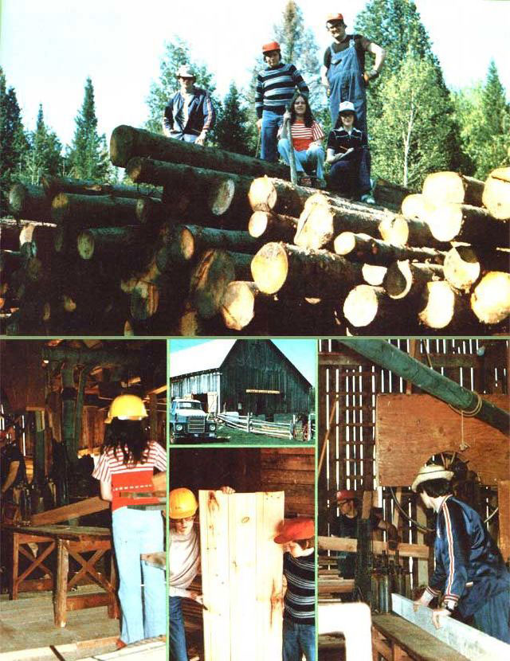

ABOVE: Though ?wood-in-the-rough? was on hand to process for resale, orders for custom planning and resawing kept the Wright family busy for weeks. BOTTOM LEFT: The Wright women find they prefer the sweet scent of pine, spruce, and cedar to the farm?s former aroma of cow. CENTER: After the animals were sold, the empty barn was a sad, lonely place? but not anymore! BOTTOM CENTER: Learning about the lumber business in an exciting, new challenge for the Wrights? children. BOTTOM RIGHT: Equipment and customers were found through the best form of advertising: word-of-mouth.